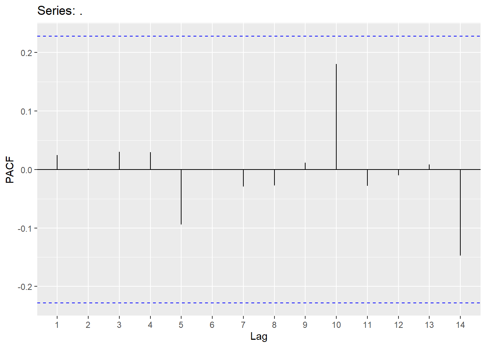
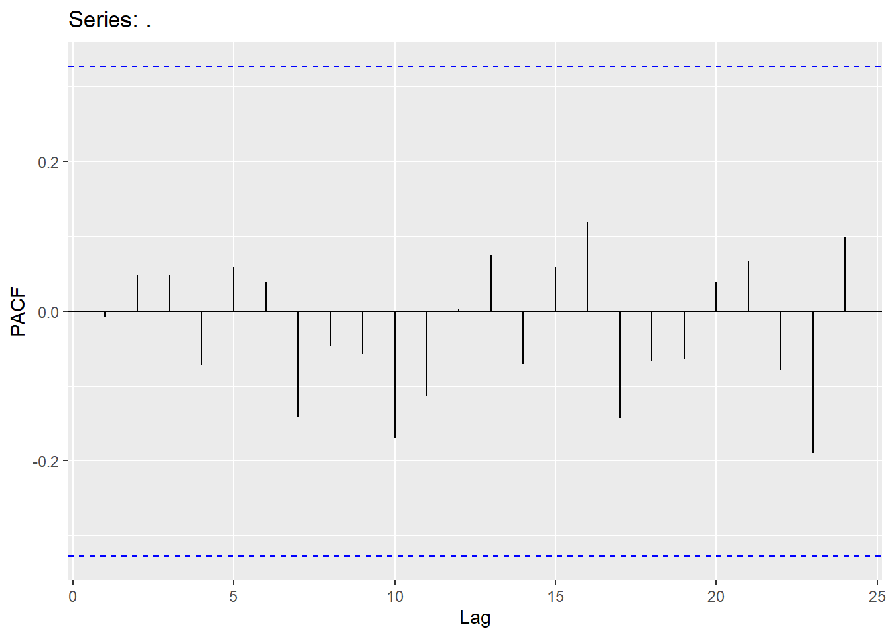
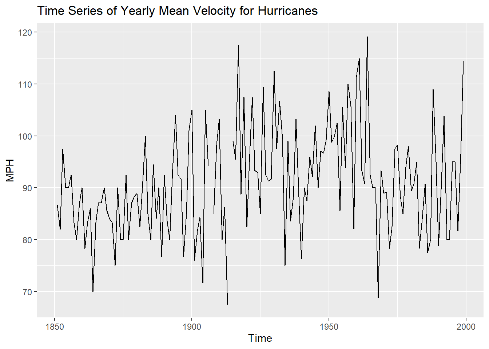
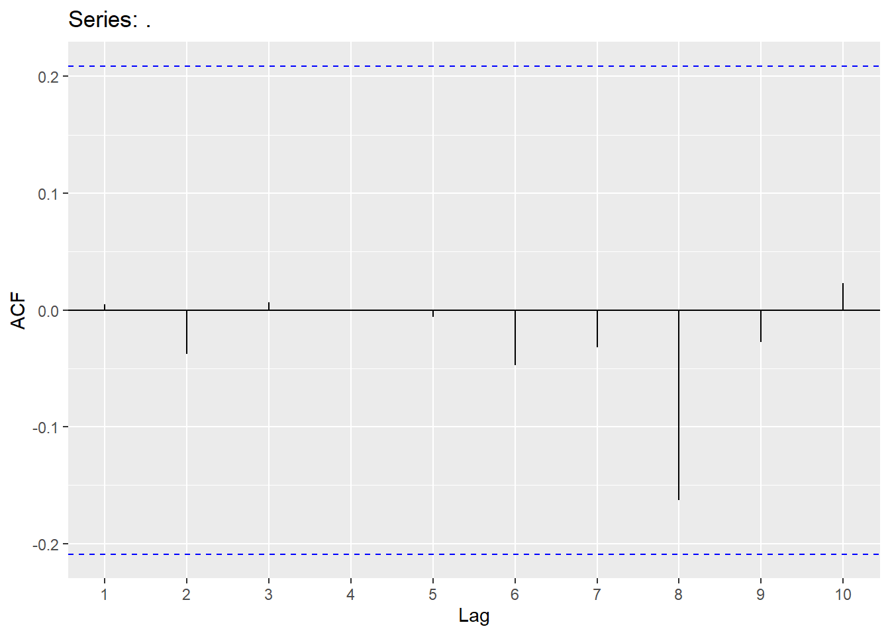
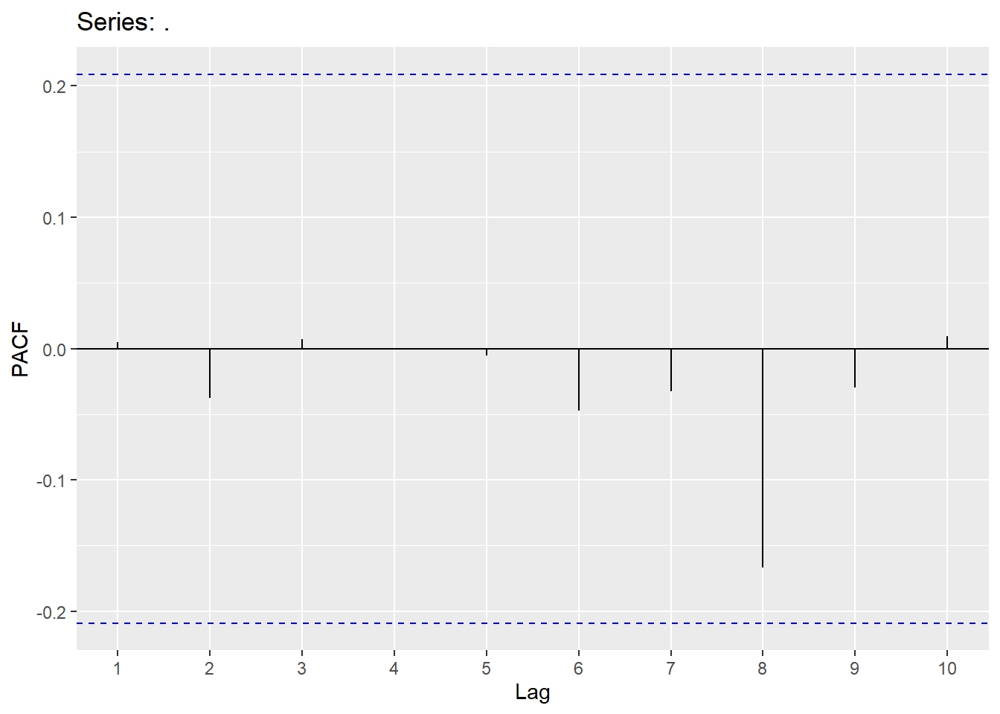
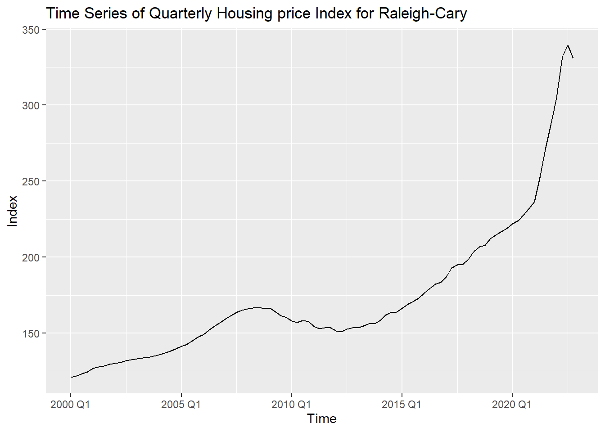
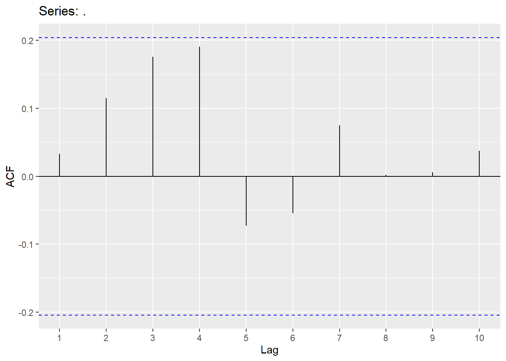
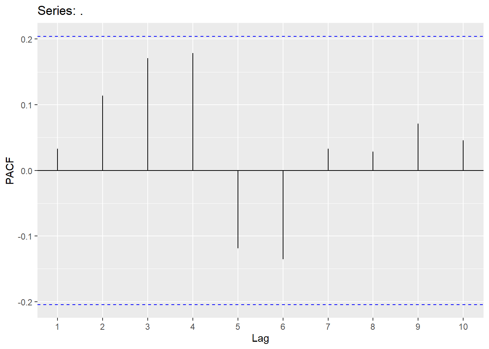

Chapter 4 ARIMA
We will not be getting into ARIMA. This chapter is fairly long and covers many different concepts in ARIMA.
4.1 Stationarity
Before we can try to model the dependency structure (the AR and MA terms), we must first have a stationary series! The ADF test is one of the most well-known and accepted test for testing stationarity. However, others have also been proposed. Within this document, we will be using the KPSS test.
Quotes.ts<-Quotes |> mutate(date = seq(ymd('2002-01-01'),ymd('2005-04-01'),by='months')) |>
mutate(month=yearmonth(date)) |> as_tsibble(index=month)
Quotes_train<-Quotes.ts %>% filter(year(date)<2005)
autoplot(Quotes_train,Quotes)+labs(title="Time Series of Monthly Stock quotes", x="Time", y="Quotes")
The following code looks into stationarity.
## # A tibble: 1 × 2
## kpss_stat kpss_pvalue
## <dbl> <dbl>
## 1 0.197 0.1## # A tibble: 1 × 1
## ndiffs
## <int>
## 1 04.2 Correlation Functions
The Acf and the Pacf in R will calculate the autocorrelation (up to the lag you specify) and the partial autocorrelation, respectively.


Since the Hurricane data set needs a difference to be stationary, we will first create the difference column and explore the correlations in that variable.
Hurricane.ts<- hurricane %>% as_tsibble(index=Year)
Hurricane_train <-Hurricane.ts %>% filter(Year <2000)
autoplot(Hurricane_train,MeanVMax)+labs(title="Time Series of Yearly Mean Velocity for Hurricanes", x="Time", y="MPH")
## # A tibble: 1 × 1
## ndiffs
## <int>
## 1 1Hurricane_train <- Hurricane_train %>% mutate(mean_diff=difference(MeanVMax))
Hurricane_train %>% features(mean_diff,unitroot_ndiffs)## # A tibble: 1 × 1
## ndiffs
## <int>
## 1 0autoplot(Hurricane_train,mean_diff)+labs(title="Differenced Mean Max Velocity", x="Time", y="Difference")## Warning: Removed 1 row containing missing values or values outside the scale range (`geom_line()`).
4.3 AutoRegressive Models (AR)
AutoRegressive (AR) models involve modeling the lags of Y. We can write an autoregressive model as
\[ Y_{t} = c + \phi_{1}Y_{t-1}+\phi_{2}Y_{t-2}+...\phi_{p}Y_{t-p}+\epsilon_{t} \] Where there are p lags of Y. Below is the code to fit an AR(2) model. The order in the Arima function needs the p,d,q values (p=# of AR terms, d=how many differences should be taken and q=# of MA terms).


Y.1 <-data.frame(Y)
Y.ts<-Y.1 %>% mutate(date = seq(ymd('2000-01-01'),ymd('2002-09-26'),by='day')) %>% as_tsibble(index=date)
Y_train <- Y.ts %>% filter(year(date)<2002)
autoplot(Y_train,Y)+labs(title="Time Series of Simulated Daily series", x="Time", y="Values")
## Series: Y
## Model: ARIMA(2,0,0)
##
## Coefficients:
## ar1 ar2
## 0.6399 -0.3838
## s.e. 0.0342 0.0342
##
## sigma^2 estimated as 93.75: log likelihood=-2696.14
## AIC=5398.28 AICc=5398.32 BIC=5412.07

4.4 Moving Average model (MA)
Moving average (MA) models involve modeling the lags of the error. We can write a moving average model as
\[ Y_{t} = c - \theta_{1}\epsilon_{t-1}-\theta_{2}\epsilon_{t-2}-...\theta_{q}\epsilon_{t-q}+\epsilon_{t} \] Where there are q lags of \(\epsilon\). Below is code to fit an MA(2) model.

x.1 <-data.frame(x)
x.ts<-x.1 %>% mutate(date = seq(ymd('2000-01-01'),ymd('2000-4-9'),by='day')) %>% as_tsibble(index=date)
x_train <- x.ts %>% filter(date < '2000-3-15')
autoplot(x_train,x)+labs(title="Time Series of Simulated Daily series", x="Time", y="Values")## Series: x
## Model: ARIMA(0,0,2)
##
## Coefficients:
## ma1 ma2
## -0.2585 0.4874
## s.e. 0.1031 0.1063
##
## sigma^2 estimated as 0.2299: log likelihood=-49.88
## AIC=105.77 AICc=106.11 BIC=112.68

4.5 White noise
For residuals to exhibit white noise, they must be “independent” and normally distributed with mean 0 and constant variance. You already know how to assess normality and constant variance, however, we need to focus on assessing “independence”. We can assess if there is significant dependence through the Ljung-Box test (or graphically through ACF and PACF plots). The hypotheses being tested are
\[H_{0}:No\quad significant\quad autocorrelation\\ H_{A}:Significant\qquad autocorrletion \]
This should be assessed on a stationary time series. Looking at a stationary time series, going back 10 lags should be sufficient (this will be different when we get to seasonal models). Keep in mind that sample size does matter when assessing significance (adjust significance level accordingly).
## lb_stat lb_pvalue
## 217.3408 0.0000## Note: Y is a vector
### After fitting model:
augment(Y.ARIMA) %>% features(.innov,ljung_box, lag=10, dof = 2)## # A tibble: 1 × 3
## .model lb_stat lb_pvalue
## <chr> <dbl> <dbl>
## 1 ARIMA(Y ~ pdq(2, 0, 0) + PDQ(0, 0, 0)) 8.50 0.3864.6 Examples
We will now demonstrate these ideas on two different examples:
First example is the Quotes data set:
Quotes.ts<-Quotes |> mutate(date = seq(ymd('2002-01-01'),ymd('2005-04-21'),by='months')) |>
mutate(month=yearmonth(date)) |> as_tsibble(index=month)
Quotes_train<-Quotes.ts %>% filter(year(date)<2005)
autoplot(Quotes_train,Quotes)+labs(title="Time Series of Monthly Stock quotes", x="Time", y="Quotes")
We will try AR(1), MA(1) and perform two automatic searches:
quotes_model <-Quotes_train %>%
model(ar1 = ARIMA(Quotes ~ pdq(1,0,0) + PDQ(0,0,0)),
ma1 = ARIMA(Quotes ~ pdq(0,0,1) + PDQ(0,0,0)),
search1 = ARIMA(Quotes),
search2 = ARIMA(Quotes,stepwise = F))
quotes_model2<-as.data.frame(quotes_model)
t(quotes_model2)## [,1]
## ar1 ARIMA(1,0,0) w/ mean
## ma1 ARIMA(0,0,1) w/ mean
## search1 ARIMA(1,0,1) w/ mean
## search2 ARIMA(1,0,1) w/ mean## # A tibble: 4 × 6
## .model sigma2 log_lik AIC AICc BIC
## <chr> <dbl> <dbl> <dbl> <dbl> <dbl>
## 1 search1 2.54 -66.8 142. 143. 148.
## 2 search2 2.54 -66.8 142. 143. 148.
## 3 ma1 2.75 -68.7 143. 144. 148.
## 4 ar1 2.79 -68.8 144. 144. 148.Choosing the search1 model, we will look at residuals for white noise (no spikes in correlation plots and not significant for the Ljung-Box test):



## # A tibble: 1 × 3
## .model lb_stat lb_pvalue
## <chr> <dbl> <dbl>
## 1 search1 3.60 0.892Second example is the Hurricane data set (mean Maximum velocity):
Hurricane.ts<- hurricane %>% as_tsibble(index=Year)
Hurricane_train <-Hurricane.ts %>% filter(Year <2000)
autoplot(Hurricane_train,MeanVMax)+labs(title="Time Series of Yearly Mean Velocity for Hurricanes", x="Time", y="MPH")
## # A tibble: 1 × 1
## ndiffs
## <int>
## 1 1Hurricane_train <- Hurricane_train %>% mutate(mean_diff=difference(MeanVMax))
Hurricane_train %>% gg_tsdisplay(mean_diff,plot_type = 'partial')## Warning: Removed 1 row containing missing values or values outside the scale range (`geom_line()`).## Warning: Removed 5 rows containing missing values or values outside the scale range (`geom_point()`).
hurr_model <-Hurricane_train %>%
model(ar3 = ARIMA(MeanVMax ~ 0 + pdq(3,1,0) + PDQ(0,0,0)),
ma2 = ARIMA(MeanVMax ~ 0 + pdq(0,1,2) + PDQ(0,0,0)),
arima32 = ARIMA(MeanVMax~0 + pdq(3,1,2) + PDQ(0,0,0)),
search1 = ARIMA(MeanVMax),
search2 = ARIMA(MeanVMax,stepwise = F))
hurr_model2<-as.data.frame(hurr_model)
t(hurr_model2)## [,1]
## ar3 ARIMA(3,1,0)
## ma2 ARIMA(0,1,2)
## arima32 ARIMA(3,1,2)
## search1 ARIMA(1,0,1) w/ mean
## search2 ARIMA(2,0,3) w/ mean## # A tibble: 5 × 6
## .model sigma2 log_lik AIC AICc BIC
## <chr> <dbl> <dbl> <dbl> <dbl> <dbl>
## 1 arima32 94.6 -539. 1090. 1090. 1108.
## 2 ma2 97.4 -542. 1091. 1091. 1100.
## 3 search2 93.1 -540. 1094. 1095. 1115.
## 4 search1 96.3 -544. 1096. 1096. 1108.
## 5 ar3 108. -549. 1106. 1106. 1118.Looking at the ACF and PACF on the residuals of MA(2) model.

## Warning: Removed 2 rows containing missing values or values outside the scale range (`geom_point()`).## Warning: Removed 2 rows containing non-finite outside the scale range (`stat_bin()`).Looking at the ACF and PACF on the ARIMA(3,1,2) model and Ljung-Box test.


## Warning: Removed 2 rows containing missing values or values outside the scale range (`geom_point()`).## Warning: Removed 2 rows containing non-finite outside the scale range (`stat_bin()`).## # A tibble: 1 × 3
## .model lb_stat lb_pvalue
## <chr> <dbl> <dbl>
## 1 arima32 5.15 0.3984.7 Forecasting
Now let’s forecast each of our models:
quotes_for<-quotes_model %>% select(search1) %>% fabletools::forecast(h=4)
quotes_resid<-Quotes$Quotes[37:40]-quotes_for$.mean
MAPE<-mean(abs(quotes_resid/Quotes$Quotes[37:40]))
MAE<-mean(abs(quotes_resid))
MAPE## [1] 0.2330841## [1] 3.952702
hurr_for<-hurr_model %>% select(arima32) %>% fabletools::forecast(h=8)
hurr_resid<-hurricane$MeanVMax[150:157]-hurr_for$.mean
MAPE<-mean(abs(hurr_resid/hurricane$MeanVMax[150:157]))
MAE<-mean(abs(hurr_resid))
MAPE## [1] 0.06067555## [1] 5.9862664.8 Trend
We will now take a look at trending time series. We will use the Consume and Raleigh Housing prices index as two examples.
Consumer example using differences for trend:
consume.ts<- consume |> mutate(date2=my(date))|> mutate(month=yearmonth(date2)) |> as_tsibble(index=month)
consume_train<-consume.ts %>% filter(year(date2)<1990)
autoplot(consume_train,Disposable_income)+labs(title="Time Series of Monthly Disposable Income", x="Time", y="Thousands of Dollars")## [1] 1consume_train<- consume_train %>%
mutate(income_diff = difference(Disposable_income))
autoplot(consume_train,income_diff)+labs(title="Time Series of Differenced Monthly Disposable Income", x="Time", y="Differences")## Warning: Removed 1 row containing missing values or values outside the scale range (`geom_line()`).
## Warning: Removed 1 row containing missing values or values outside the scale range (`geom_line()`).## Warning: Removed 1 row containing missing values or values outside the scale range (`geom_point()`).Looking at the ACF and PACF, we will try a few models and also use an automatic search.
consume_model <-consume_train %>%
model(ar1 = ARIMA(Disposable_income ~ pdq(1,1,0) + PDQ(0,0,0)),
ma1 = ARIMA(Disposable_income ~ pdq(0,1,1) + PDQ(0,0,0)),
ar6 = ARIMA(Disposable_income ~ pdq(6,1,0) + PDQ(0,0,0)),
ma6 = ARIMA(Disposable_income ~ pdq(0,1,6) + PDQ(0,0,0)),
search1 = ARIMA(Disposable_income),
search2 = ARIMA(Disposable_income,stepwise = F))
consume_model2<-as.data.frame(consume_model)
t(consume_model2)## [,1]
## ar1 ARIMA(1,1,0) w/ drift
## ma1 ARIMA(0,1,1) w/ drift
## ar6 ARIMA(6,1,0) w/ drift
## ma6 ARIMA(0,1,6)
## search1 ARIMA(0,1,1) w/ drift
## search2 ARIMA(0,1,1) w/ drift## # A tibble: 6 × 6
## .model sigma2 log_lik AIC AICc BIC
## <chr> <dbl> <dbl> <dbl> <dbl> <dbl>
## 1 ma1 546. -397. 799. 800. 807.
## 2 search1 546. -397. 799. 800. 807.
## 3 search2 546. -397. 799. 800. 807.
## 4 ar6 520. -392. 800. 802. 820.
## 5 ar1 571. -399. 803. 803. 811.
## 6 ma6 610. -400. 814. 815. 831.Selecting the ARIMA(6,1,0) model. White noise looks good and forecast is good.


## # A tibble: 1 × 3
## .model lb_stat lb_pvalue
## <chr> <dbl> <dbl>
## 1 ar6 3.21 0.523pred_ar6 <- consume_model %>% select(ar6) %>%
fabletools::forecast(h=6)
error_ar6 <- consume$Disposable_income[89:94] - pred_ar6$.mean
MAPE_ar6 <-mean(abs(error_ar6/consume$Disposable_income[89:94]))
MAE_ar6 <- mean(abs(error_ar6))
consume_model %>% select(ar6) %>% fabletools::forecast(h=6) %>% autoplot(consume_train)pred_ma1 <- consume_model %>% select(ma1) %>%
fabletools::forecast(h=6)
error_ma1 <- consume$Disposable_income[89:94] - pred_ma1$.mean
MAPE_ma1 <-mean(abs(error_ma1/consume$Disposable_income[89:94]))
MAE_ma1 <- mean(abs(error_ma1))
consume_model %>% select(ma1) %>% fabletools::forecast(h=6) %>% autoplot(consume_train)Raleigh example using differences:
Raleigh.ts<- Raleigh %>% mutate(quarter=yearquarter(DATE)) %>% as_tsibble(index=quarter)
Raleigh_train <-Raleigh.ts %>% filter(quarter <yearquarter("2023 Q1"))
autoplot(Raleigh_train,price_index)+labs(title="Time Series of Quarterly Housing price Index for Raleigh-Cary", x="Time", y="Index")
## # A tibble: 1 × 1
## ndiffs
## <int>
## 1 2Raleigh_train <- Raleigh_train %>% mutate(diff_price=difference(difference(price_index)))
Raleigh_train %>% gg_tsdisplay(diff_price,plot_type = 'partial')## Warning: Removed 2 rows containing missing values or values outside the scale range (`geom_line()`).## Warning: Removed 2 rows containing missing values or values outside the scale range (`geom_point()`).Now we will try a few models:
Raleigh_model <-Raleigh_train %>%
model(
ma5 = ARIMA(price_index ~ pdq(0,2,5)+ PDQ(0,0,0)+0),
ar2 = ARIMA(price_index ~ pdq(2,2,0)+ PDQ(0,0,0)+0),
ma2 = ARIMA(price_index ~ pdq(0,2,2)+ PDQ(0,0,0)+0),
search1 = ARIMA(price_index~PDQ(0,0,0)),
search2 = ARIMA(price_index,stepwise = FALSE)
)
Raleigh_model2<-as.data.frame(Raleigh_model)
t(Raleigh_model2)## [,1]
## ma5 ARIMA(0,2,5)
## ar2 ARIMA(2,2,0)
## ma2 ARIMA(0,2,2)
## search1 ARIMA(1,2,3)
## search2 ARIMA(0,2,5)## # A tibble: 5 × 6
## .model sigma2 log_lik AIC AICc BIC
## <chr> <dbl> <dbl> <dbl> <dbl> <dbl>
## 1 ma5 7.65 -219. 451. 452. 466.
## 2 search2 7.65 -219. 451. 452. 466.
## 3 search1 8.36 -223. 455. 456. 468.
## 4 ar2 9.50 -229. 464. 464. 471.
## 5 ma2 10.1 -231. 468. 469. 476.Looking at residuals:

augment(Raleigh_model) %>% filter(.model=='search1') %>% features(.innov,ljung_box, lag=10, dof = 4)## # A tibble: 1 × 3
## .model lb_stat lb_pvalue
## <chr> <dbl> <dbl>
## 1 search1 7.76 0.257Forecasting chosen model onto the validatoin data set:
pred_arima123 <- Raleigh_model %>% select(search1) %>%
fabletools::forecast(h=5)
error_arima123 <- Raleigh.ts$price_index[93:97] - pred_arima123$.mean
MAPE_arima123 <-mean(abs(error_arima123/Raleigh.ts$price_index[93:97]))
MAE_arima123 <- mean(abs(error_arima123))
Raleigh_model %>% select(search1) %>% fabletools::forecast(h=5) %>% autoplot(Raleigh_train)pred_data <- tibble(
quarter = yearquarter(seq.Date(from = as.Date("2023-01-01"),
to = as.Date("2024-01-01"),
by = "quarter")),
value = pred_arima123$.mean
)
test_data <- tibble(
quarter = yearquarter(seq.Date(from = as.Date("2023-01-01"),
to = as.Date("2024-01-01"),
by = "quarter")),
value = Raleigh.ts$price_index[93:97]
)
ggplot() +
geom_line(data = test_data, aes(x = quarter, y = value), color = "blue", linetype = "solid") +
geom_line(data = pred_data, aes(x = quarter, y = value), color = "orange", linetype = "dashed") +
labs(title = "Predicted versus Actual values",
x = "Quarter", y = "Price Index") +
theme_minimal()Using the consumer data set and fitting a linear trend line:
consume_linear <-consume_train %>%
model(trend1 = ARIMA(Disposable_income~ trend() + pdq(0,0,0) + PDQ(0,0,0)+1)
)
report(consume_linear)## Series: Disposable_income
## Model: LM w/ ARIMA(0,0,0) errors
##
## Coefficients:
## trend() intercept
## 7.8743 2368.4594
## s.e. 0.1168 5.9841
##
## sigma^2 estimated as 792.5: log likelihood=-417.56
## AIC=841.12 AICc=841.41 BIC=848.56fitted_values <- fitted(consume_linear)
# Plot the original data and fitted values
autoplot(consume_train, Disposable_income) +
autolayer(fitted_values, .fitted, color = "blue", linetype = "dashed") +
labs(title = "Fitted Values from Linear Regression Model for Disposable Income",
x = "Time", y = "Dollars (000)") +
theme_minimal()
consume_linear <-consume_train %>%
model(trend1 = ARIMA(Disposable_income~ trend() + pdq(6,0,0) + PDQ(0,0,0)+1),
trend2 = ARIMA(Disposable_income ~ trend() + PDQ(0,0,0) +1)
)
consume_linear2<-as.data.frame(consume_linear)
t(consume_linear2)## [,1]
## trend1 LM w/ ARIMA(6,0,0) errors
## trend2 LM w/ ARIMA(1,0,0) errors## # A tibble: 2 × 6
## .model sigma2 log_lik AIC AICc BIC
## <chr> <dbl> <dbl> <dbl> <dbl> <dbl>
## 1 trend2 504. -397. 803. 803. 813.
## 2 trend1 486. -393. 805. 807. 827.Comparing the random walk with drift to the linear trend time series model for the consumer data set:
augment(consume_linear) %>% filter(.model=='trend1') %>% features(.innov,ljung_box, lag=10, dof = 6)## # A tibble: 1 × 3
## .model lb_stat lb_pvalue
## <chr> <dbl> <dbl>
## 1 trend1 3.20 0.524pred_lm <- consume_linear %>% select(trend1) %>%
fabletools::forecast(h=6)
consume_linear %>% select(trend1) %>% fabletools::forecast(h=6) %>% autoplot(consume_train)error_lm <- consume$Disposable_income[89:94] - pred_lm$.mean
MAPE_lm <-mean(abs(error_lm/consume$Disposable_income[89:94]))
MAE_lm <- mean(abs(error_lm))
pred_rw <- tibble(
month = yearmonth(seq.Date(from = as.Date("1990-01-01"),
to = as.Date("1990-06-01"),
by = "month")),
value = pred_ar6$.mean
)
pred_lm2 <- tibble(
month = yearmonth(seq.Date(from = as.Date("1990-01-01"),
to = as.Date("1990-06-01"),
by = "month")),
value = pred_lm$.mean
)
test_data <- tibble(
month = yearmonth(seq.Date(from = as.Date("1990-01-01"),
to = as.Date("1990-06-01"),
by = "month")),
value = consume.ts$Disposable_income[89:94]
)
combined_data <- bind_rows(
test_data %>% mutate(Line = "Actual"),
pred_rw %>% mutate(Line = "Random Walk"),
pred_lm2 %>% mutate(Line = "Linear Model")
)
# Plot the data with a legend
ggplot(combined_data, aes(x = month, y = value, color = Line)) +
geom_line(linetype = "solid") +
labs(title = "Predicted versus Actual values",
x = "Date", y = "Disposable Income (000)",
color = "Legend") +
theme_minimal()Fitting a trend line to the Raleigh data set:
Raleigh_linear <-Raleigh_train %>%
model(trend1 = ARIMA(price_index~ trend() + pdq(0,0,0) + PDQ(0,0,0)+1)
)
Raleigh_linear %>% residuals() %>% ggAcf(lag.max = 10)Raleigh_linear <-Raleigh_train %>%
model(trend1 = ARIMA(price_index~ trend() + pdq(2,0,0) + PDQ(0,0,0)+1),
trend2 = ARIMA(price_index ~ trend() + PDQ(0,0,0) + 1),
trend3 = ARIMA(price_index ~ trend() + PDQ(0,0,0) + 1,stepwise = FALSE)
)
Raleigh_linear2<-as.data.frame(Raleigh_linear)
t(Raleigh_linear2)## [,1]
## trend1 LM w/ ARIMA(2,0,0) errors
## trend2 LM w/ ARIMA(2,0,2) errors
## trend3 LM w/ ARIMA(1,0,4) errors## # A tibble: 3 × 6
## .model sigma2 log_lik AIC AICc BIC
## <chr> <dbl> <dbl> <dbl> <dbl> <dbl>
## 1 trend3 7.45 -224. 465. 466. 485.
## 2 trend2 8.53 -230. 474. 475. 491.
## 3 trend1 10.5 -239. 488. 489. 501.

augment(Raleigh_linear) %>% filter(.model=='trend2') %>% features(.innov,ljung_box, lag=10, dof = 4)## # A tibble: 1 × 3
## .model lb_stat lb_pvalue
## <chr> <dbl> <dbl>
## 1 trend2 9.50 0.147Comparing the Raleigh data set using a random walk with drift to the trend model:
pred_lm <- Raleigh_linear %>% select(trend2) %>%
fabletools::forecast(h=5)
error_lm <- Raleigh.ts$price_index[93:97] - pred_lm$.mean
MAPE_lm <-mean(abs(error_lm/Raleigh.ts$price_index[93:97]))
MAE_lm <- mean(abs(error_lm))
pred_rw <- tibble(
quarter = yearquarter(seq.Date(from = as.Date("2023-01-01"),
to = as.Date("2024-01-01"),
by = "quarter")),
value = pred_arima123$.mean
)
pred_lm2 <- tibble(
quarter = yearquarter(seq.Date(from = as.Date("2023-01-01"),
to = as.Date("2024-01-01"),
by = "quarter")),
value = pred_lm$.mean
)
test_data <- tibble(
quarter = yearquarter(seq.Date(from = as.Date("2023-01-01"),
to = as.Date("2024-01-01"),
by = "quarter")),
value = Raleigh.ts$price_index[93:97]
)
combined_data <- bind_rows(
test_data %>% mutate(Line = "Actual"),
pred_rw %>% mutate(Line = "Random Walk"),
pred_lm2 %>% mutate(Line = "Linear Model")
)
# Plot the data with a legend
ggplot(combined_data, aes(x = quarter, y = value, color = Line)) +
geom_line(linetype = "solid") +
labs(title = "Predicted versus Actual values",
x = "Date", y = "Raleigh Price Index",
color = "Legend") +
theme_minimal()
#### Fitting a Quadratic ARIMAX
### First we need to create the x-variables
### I called them time and time2 (time is just a sequence from 1 to n and time2 is time squared)
Raleigh2.ts <- Raleigh.ts %>% mutate(time = 1:n(), time2= time^2)
## Create training data set
Raleigh_train2 <-Raleigh2.ts %>% filter(quarter <yearquarter("2023 Q1"))
##Create linear model
lm.raleigh<-lm(price_index~time+time2,data=Raleigh_train2)
## Make sure residuals are stationary
ndiffs(resid(lm.raleigh))## [1] 0## Put it all together in a model..notice that I have time and time2 in regression
fit <- Raleigh_train2 %>% model(ARIMA(price_index~ time +time2 +pdq(2,0,2)+PDQ(0,0,0)+1))
### Do I have white noise for the residuals of this model?
fit %>% residuals() %>% ggAcf(lag.max = 10)## To forecast, we need to create a new data set with time and time2
## The training data ended at observation 92
Raleigh_future<- new_data(Raleigh_train2,5) %>% mutate(time=seq(93,97), time2=time^2)
## Now we can forecast and plot
fabletools::forecast(fit,new_data=Raleigh_future) %>% autoplot(Raleigh_train2)## Save forecasts
fit.quad<-fabletools::forecast(fit,new_data=Raleigh_future)
##Compare error and also look at plots
error_lm <- Raleigh.ts$price_index[93:97] - pred_lm$.mean
MAPE_lm <-mean(abs(error_lm/Raleigh.ts$price_index[93:97]))
MAE_lm <- mean(abs(error_lm))
error_quad <-Raleigh.ts$price_index[93:97] - fit.quad$.mean
MAPE_quad <-mean(abs(error_quad/Raleigh.ts$price_index[93:97]))
MAE_quad <- mean(abs(error_quad))
MAPE_lm## [1] 0.05431984## [1] 0.03425431## [1] 18.82757## [1] 11.84002pred_quad <- tibble(
quarter = yearquarter(seq.Date(from = as.Date("2023-01-01"),
to = as.Date("2024-01-01"),
by = "quarter")),
value = fit.quad$.mean
)
combined_data <- bind_rows(
test_data %>% mutate(Line = "Actual"),
pred_rw %>% mutate(Line = "Random Walk"),
pred_lm2 %>% mutate(Line = "Linear Model"),
pred_quad %>% mutate(Line = "Quadratic")
)
ggplot(combined_data, aes(x = quarter, y = value, color = Line)) +
geom_line(linetype = "solid") +
labs(title = "Predicted versus Actual values",
x = "Date", y = "Raleigh Price Index",
color = "Legend") +
theme_minimal()4.9 Python Code for ARMA/ARIMA models
import numpy as np
import pandas as pd
import matplotlib.pyplot as plt
from matplotlib import pyplot
from pandas import DataFrame
from statsmodels.tsa.stattools import adfuller
from statsmodels.graphics.tsaplots import plot_acf
from statsmodels.graphics.tsaplots import plot_pacf
from statsmodels.tsa.arima.model import ARIMA
import statsmodels.api as sm
quotes=pd.read_csv("Q:\\My Drive\\Fall 2017 - Time Series\\DataR\\fpp_insurance.csv")
df = pd.date_range(start='2002-01-01', end='2005-05-01', freq='ME')
quotes.index=pd.to_datetime(df)
y=pd.read_csv("Q:\\My Drive\\Fall 2017 - Time Series\\DataR\\ar2.csv")
quotes_train = quotes.head(36)
y_train = y.head(731)
result=adfuller(quotes_train["Quotes"])
print(f'ADF p-value: {result[1]}')## ADF p-value: 0.04236093395330452

### Using statsmodel...the older way of doing this..
model = ARIMA(y_train, order=(2,0,0))
model_fit = model.fit()
print(model_fit.summary())## SARIMAX Results
## ==============================================================================
## Dep. Variable: Y No. Observations: 731
## Model: ARIMA(2, 0, 0) Log Likelihood -2696.123
## Date: Thu, 30 Oct 2025 AIC 5400.247
## Time: 08:46:57 BIC 5418.625
## Sample: 0 HQIC 5407.337
## - 731
## Covariance Type: opg
## ==============================================================================
## coef std err z P>|z| [0.025 0.975]
## ------------------------------------------------------------------------------
## const -0.0960 0.481 -0.199 0.842 -1.039 0.847
## ar.L1 0.6398 0.036 17.605 0.000 0.569 0.711
## ar.L2 -0.3838 0.035 -11.007 0.000 -0.452 -0.315
## sigma2 93.4961 4.803 19.466 0.000 84.083 102.910
## ===================================================================================
## Ljung-Box (L1) (Q): 0.00 Jarque-Bera (JB): 0.27
## Prob(Q): 0.95 Prob(JB): 0.88
## Heteroskedasticity (H): 0.93 Skew: -0.03
## Prob(H) (two-sided): 0.58 Kurtosis: 3.08
## ===================================================================================
##
## Warnings:
## [1] Covariance matrix calculated using the outer product of gradients (complex-step).
## 0
## count 731.000000
## mean 0.001103
## std 9.685433
## min -33.427139
## 25% -6.456285
## 50% 0.257085
## 75% 6.333976
## max 30.312938

Using ndiffs to see if we need to take a difference:
from pmdarima.arima import ndiffs
hurr = pd.read_csv("https://raw.githubusercontent.com/sjsimmo2/TimeSeries/master/hurrican.csv")
hurr2 = hurr.dropna(axis=0)
hurricane_train =hurr2.head(149)
hurricane_train## Date Hurricanes MinVMax MaxVMax MeanVMax Year
## 0 1851 3 80.0 100.0 86.7 1851
## 1 1852 5 70.0 100.0 82.0 1852
## 2 1853 4 70.0 130.0 97.5 1853
## 3 1854 3 70.0 110.0 90.0 1854
## 4 1855 4 70.0 110.0 90.0 1855
## .. ... ... ... ... ... ...
## 146 1997 3 65.0 110.0 81.7 1997
## 147 1998 10 65.0 155.0 96.5 1998
## 148 1999 8 85.0 135.0 114.4 1999
## 149 2000 8 70.0 120.0 91.3 2000
## 150 2001 9 65.0 125.0 91.7 2001
##
## [149 rows x 6 columns]## 1Checking for white noise: The first value in the Ljung-Box test is the test statistic and the second value is the p-value.
import statsmodels.stats.diagnostic as diag
model = ARIMA(y_train, order=(2,0,0))
model_fit = model.fit()
print(model_fit.summary())## SARIMAX Results
## ==============================================================================
## Dep. Variable: Y No. Observations: 731
## Model: ARIMA(2, 0, 0) Log Likelihood -2696.123
## Date: Thu, 30 Oct 2025 AIC 5400.247
## Time: 08:46:58 BIC 5418.625
## Sample: 0 HQIC 5407.337
## - 731
## Covariance Type: opg
## ==============================================================================
## coef std err z P>|z| [0.025 0.975]
## ------------------------------------------------------------------------------
## const -0.0960 0.481 -0.199 0.842 -1.039 0.847
## ar.L1 0.6398 0.036 17.605 0.000 0.569 0.711
## ar.L2 -0.3838 0.035 -11.007 0.000 -0.452 -0.315
## sigma2 93.4961 4.803 19.466 0.000 84.083 102.910
## ===================================================================================
## Ljung-Box (L1) (Q): 0.00 Jarque-Bera (JB): 0.27
## Prob(Q): 0.95 Prob(JB): 0.88
## Heteroskedasticity (H): 0.93 Skew: -0.03
## Prob(H) (two-sided): 0.58 Kurtosis: 3.08
## ===================================================================================
##
## Warnings:
## [1] Covariance matrix calculated using the outer product of gradients (complex-step).# Perform the Ljung-Box test
lb_test = diag.acorr_ljungbox(model_fit.resid, lags=[10], model_df=2)
print(lb_test)## lb_stat lb_pvalue
## 10 8.542081 0.382384Fitting ARIMA models.
## Fit AR(2) model to AR2 data set
from statsforecast import StatsForecast
from statsforecast.models import ARIMA
y=pd.read_csv("Q:\\My Drive\\Fall 2017 - Time Series\\DataR\\ar2.csv")
df = pd.date_range(start='2000-01-01', end='2002-09-26', freq='D')
y.index=pd.to_datetime(df)
d = {'unique_id': 1, 'ds': y.index, 'y': y['Y']}
y_sf = pd.DataFrame(data = d)
y_train = y_sf.head(731)
y_test = y_sf.tail(69)
model_SD_ARIMA = StatsForecast(models = [ARIMA(order=(2, 0, 0))], freq = 'D')
model_SD_ARIMA.fit(df = y_train)## StatsForecast(models=[ARIMA])## (2, 0, 0, 0, 1, 0, 0)## {'ar1': 0.639764958452907, 'ar2': -0.38382217434951516, 'intercept': -0.09343729897766202}## 5400.246891713973### Fit MA(2) model to x
x=pd.read_csv("Q:\\My Drive\\Fall 2017 - Time Series\\DataR\\MA2.csv")
df = pd.date_range(start='2000-01-01', end='2000-04-09', freq='D')
x.index=pd.to_datetime(df)
d = {'unique_id': 1, 'ds': x.index, 'y': x['x']}
x_sf = pd.DataFrame(data = d)
x_train = x_sf.head(74)
x_test = x_sf.tail(26)
model_MA2 = StatsForecast(models = [ARIMA(order=(0, 0, 2))], freq = 'D')
model_MA2.fit(df = x_train)## StatsForecast(models=[ARIMA])#### Note: when you get the "ARMA" values for the model, it is listed as:
### p q P Q seasonlength d D
### when it is NOT considering seasonality, season length is set to 1.
model_MA2.fitted_[0][0].model_.get("arma")## (0, 2, 0, 0, 1, 0, 0)## {'ma1': -0.2619703028351055, 'ma2': 0.49786050912412566, 'intercept': 0.0011885482107510217}## 107.89060294675616Using the Quotes data set for different models in ARIMA:
## Compare two different models plus automatic search on Quotes data set:
from statsforecast.models import AutoARIMA
from statsforecast.arima import arima_string
d = {'unique_id': 1, 'ds': quotes.index, 'y': quotes['Quotes']}
quotes_sf = pd.DataFrame(data = d)
quotes_train = quotes_sf.head(36)
quotes_test = quotes_sf.tail(4)
plot_acf(quotes_train["y"],lags=12)
pyplot.show()
## AR(1) model
model_Quotes = StatsForecast(models = [ARIMA(order=(1, 0, 0), include_mean=True)], freq = 'ME')
model_Quotes.fit(df = quotes_train)## StatsForecast(models=[ARIMA])## (1, 0, 0, 0, 1, 0, 0)## {'ar1': 0.6712076661935175, 'intercept': 13.18990536452543}## 143.5893107658691## MA(1) model
model_Quotes2 = StatsForecast(models = [ARIMA(order=(0, 0, 1), include_mean=True)], freq = 'ME')
model_Quotes2.fit(df = quotes_train)## StatsForecast(models=[ARIMA])## (0, 1, 0, 0, 1, 0, 0)## {'ma1': 0.7507681467542602, 'intercept': 13.236625919936786}## 143.6147938154081### Now the automatic search....choose the AR(1) model
model_Quotes = StatsForecast(models = [AutoARIMA(seasonal=False)], freq = 'ME')
model_Quotes.fit(df = quotes_train)## StatsForecast(models=[AutoARIMA])## (1, 0, 0, 0, 1, 0, 0)## {'ar1': 0.9900652806700364}## 151.64675255955572### Even though the automatic search choose AR(1), it did NOT include intercept.
### Made AR term close to 1 (very close to a random walk).
### Refitting the AR(1) model:
model_Quotes = StatsForecast(models = [ARIMA(order=(1, 0, 0), include_mean=True)], freq = 'ME')
model_Quotes.fit(df = quotes_train)## StatsForecast(models=[ARIMA])

# Perform the Ljung-Box test
lb_test = diag.acorr_ljungbox(resid, lags=[10], model_df=1)
print(lb_test)## lb_stat lb_pvalue
## 10 7.200837 0.616218Now for using the hurricane data set:
###Note that hurr2 is being redefined here.
df = pd.date_range(start='1851-01-01', end='2008-01-01', freq='YE')
hurr.index=pd.to_datetime(df)
hurr2 = hurr.dropna(axis=0)
d = {'unique_id': 1, 'ds': hurr2.index, 'y': hurr2['MeanVMax']}
hurr_sf = pd.DataFrame(data = d)
hurr_train = hurr_sf.head(149)
hurr_test = hurr_sf.tail(9)
###Looks like we need to take differences:
n_diffs=ndiffs(hurr_train["y"])
print(n_diffs)## 1## <string>:2: SettingWithCopyWarning:
## A value is trying to be set on a copy of a slice from a DataFrame.
## Try using .loc[row_indexer,col_indexer] = value instead
##
## See the caveats in the documentation: https://pandas.pydata.org/pandas-docs/stable/user_guide/indexing.html#returning-a-view-versus-a-copyhurr3 = hurr2.dropna(axis=0)
df = pd.date_range(start='1854-01-01', end='2008-01-01', freq='YE')
hurr3.index=pd.to_datetime(df)
d = {'unique_id': 1, 'ds': hurr3.index, 'y': hurr3['MVM_diff']}
hurr_sf = pd.DataFrame(data = d)
hurr_train = hurr_sf.head(146)
plot_acf(hurr_train['y'],lags=12)
pyplot.show()
### Now to fit models
model_hurr = StatsForecast(models = [ARIMA(order=(3, 1, 0))], freq = 'YE')
model_hurr.fit(df = hurr_train)## StatsForecast(models=[ARIMA])## (3, 0, 0, 0, 1, 1, 0)## {'ar1': -1.206803756212731, 'ar2': -0.9921577329431666, 'ar3': -0.45513268425713543}## 1170.7081439455412model_hurr = StatsForecast(models = [ARIMA(order=(0, 1, 2))], freq = 'YE')
model_hurr.fit(df = hurr_train)## StatsForecast(models=[ARIMA])## (0, 2, 0, 0, 1, 1, 0)## {'ma1': -1.7415599367901724, 'ma2': 0.7832219253808886}## 1106.8880415246215model_hurr1 = StatsForecast(models = [ARIMA(order=(3, 1, 2))], freq = 'YE')
model_hurr1.fit(df = hurr_train)## StatsForecast(models=[ARIMA])## (3, 2, 0, 0, 1, 1, 0)## {'ar1': -0.023320010896224146, 'ar2': -0.1099021803224285, 'ar3': 0.08526901780966276, 'ma1': -1.8828872133155077, 'ma2': 0.8828872198953689}## 1095.8026951945421model_hurr = StatsForecast(models = [AutoARIMA(seasonal=False)], freq = 'YE')
model_hurr.fit(df = quotes_train)## StatsForecast(models=[AutoARIMA])## (1, 0, 0, 0, 1, 0, 0)## {'ar1': 0.9900652806700364}## 151.64675255955572
## lb_stat lb_pvalue
## 10 2.30648 0.805315Get some measures of accuracy on validation data:
## C:\PROGRA~3\ANACON~1\Lib\site-packages\statsforecast\core.py:492: FutureWarning: In a future version the predictions will have the id as a column. You can set the `NIXTLA_ID_AS_COL` environment variable to adopt the new behavior and to suppress this warning.
## warnings.warn(yhat=y_hat1.reset_index(drop=True)
test = hurr_test.reset_index(drop=True)
abs_error= np.absolute(test['y']-yhat["ARIMA"])
MAE = np.mean(abs_error)
MAE## 100.95193915786221## 1.022498446993838An example with trend (fitting it with both differencing and linear regression)
consume = pd.read_csv("https://raw.githubusercontent.com/sjsimmo2/TimeSeries/master/consume1982.csv")
df = pd.date_range(start='1982-09-01', end='1990-07-01', freq='ME')
consume.index=pd.to_datetime(df)
consume2 =consume
d = {'unique_id': 1, 'ds': consume.index, 'y': consume['Disposable_income']}
consume_sf = pd.DataFrame(data = d)
consume_train = consume_sf.head(88)
consume_test = consume_sf.tail(6)
n_diffs=ndiffs(consume_train["y"])
print(n_diffs)## 1consume2['income_diff'] = consume['Disposable_income'].diff()
consume3 = consume2.dropna(axis=0)
d = {'unique_id': 1, 'ds': consume3.index, 'y': consume3['income_diff']}
consume_sf = pd.DataFrame(data = d)
consume_train_diff = consume_sf.head(87)
consume_test_diff = consume_sf.tail(6)
plot_acf(consume_train_diff['y'],lags=12)
pyplot.show()
model_consume = StatsForecast(models = [ARIMA(order=(1, 1, 0), alias="AR1",include_drift=True),
ARIMA(order=(0, 1, 1), alias="MA1",include_drift=True),
ARIMA(order=(6, 1, 0), alias="AR6",include_drift=True),
ARIMA(order=(0, 1, 6), alias="MA6",include_drift=True)], freq = 'ME')
model_consume.fit(df = consume_train)## StatsForecast(models=[AR1,MA1,AR6,MA6])## (1, 0, 0, 0, 1, 1, 0)## {'ar1': -0.25896653323215896, 'drift': 8.022216007742262}## 803.1326810471955## (0, 1, 0, 0, 1, 1, 0)## {'ma1': -0.41438549614590336, 'drift': 7.98102069783255}## 799.3233434797908## (6, 0, 0, 0, 1, 1, 0)## {'ar1': -0.4010611168449245, 'ar2': -0.31654068903784843, 'ar3': -0.16283506529385414, 'ar4': -0.1061553402707993, 'ar5': -0.010770449307681035, 'ar6': -0.22726549262306284, 'drift': 7.7466345838326145}## 801.9784335671225## (0, 6, 0, 0, 1, 1, 0)## {'ma1': -0.31833320917990643, 'ma2': -0.2699449416974281, 'ma3': 0.04769403066216973, 'ma4': 0.022689040735286884, 'ma5': 0.1251498387227853, 'ma6': -0.370928091243984, 'drift': 8.089050997814592}## 795.8092927997254### Now for looking at trend:
consume = pd.read_csv("https://raw.githubusercontent.com/sjsimmo2/TimeSeries/master/consume1982.csv")
df = pd.date_range(start='1982-09-01', end='1990-07-01', freq='ME')
consume.index=pd.to_datetime(df)
#consume2 =consume
d = {'unique_id': 1, 'ds': consume.index, 'y': consume['Disposable_income']}
consume_sf = pd.DataFrame(data = d)
consume_sf['x'] = range(1, len(df) + 1)
consume_train = consume_sf.head(88)
consume_test = consume_sf.tail(6)4.10 SAS Code for ARMA/ARIMA
AUGMENTED DICKEY-FULLER TESTING
proc arima data=Time.fpp_insurance plot=all; identify var=quotes nlag=10 stationarity=(adf=2); identify var=quotes(1) nlag=10 stationarity=(adf=2); run; quit;
CORRELATION FUNCTIONS
Notice no model statement!
proc arima data=Time.ar2 plot(unpack)=all; identify var=y nlag=10 outcov=Corr; estimate method=ML; run; quit;
BUILDING AN AUTOREGRESSIVE MODEL
Fit an AR2 model
proc arima data=Time.AR2 plot=all; identify var=y nlag=10; estimate p=2 method=ML; run; quit;
Add another estimate statement proc arima data=Time.AR2 plot=all; identify var=y nlag=10; estimate p=(2) method=ML; estimate p=(1,2,4) method=ML; run; quit;
BUILDING A MOVING AVERAGE MODEL
proc arima data=Time.ma2; identify var=x; estimate q=2 method=ML; run; quit;
Need to check for how to take care of trend
proc arima data=Time.Ebay9899 plot=all; identify var=DailyHigh nlag=10 stationarity=(adf=2); run; quit;
It is a random walk!! The way to model a random walk is by using differences
proc arima data=Time.Ebay9899 plot=all; identify var=DailyHigh(1) nlag=10 stationarity=(adf=2); run; quit;
BUILDING AN AUTOREGRESSIVE MOVING AVERAGE MODEL (AUTOMATIC SELECTION TECHNIQUES)
Fit an ARIMA model
proc arima data=Time.Hurricanes plot=all; identify var=MeanVMax nlag=12 stationarity=(adf=2); run; quit;
Model identification with minimum information criterion (MINIC)
proc arima data=Time.Hurricanes plot=all; identify var=MeanVMax nlag=12 minic P=(0:12) Q=(0:12); run; quit;
Model identification with smallest canonical correlation (SCAN);
proc arima data=Time.Hurricanes plot=all; identify var=MeanVMax nlag=12 scan P=(0:12) Q=(0:12); run; quit;
Model identificaiton with extended sample autocorrelation function (ESACF)
proc arima data=Time.Hurricanes plot=all; identify var=MeanVMax nlag=12 esacf P=(0:12) Q=(0:12); run; quit;
Create estimates with our ARIMA model p=2, q=3
proc arima data=Time.Hurricanes plot=all; identify var=MeanVMax nlag=12; estimate p=2 q=3 method=ML; run; quit;
FORECASTING
proc arima data=Time.Hurricanes plot=all; identify var=MeanVMax nlag=10 ; estimate p=2 q=3 method=ML; forecast lead=10; run; quit;